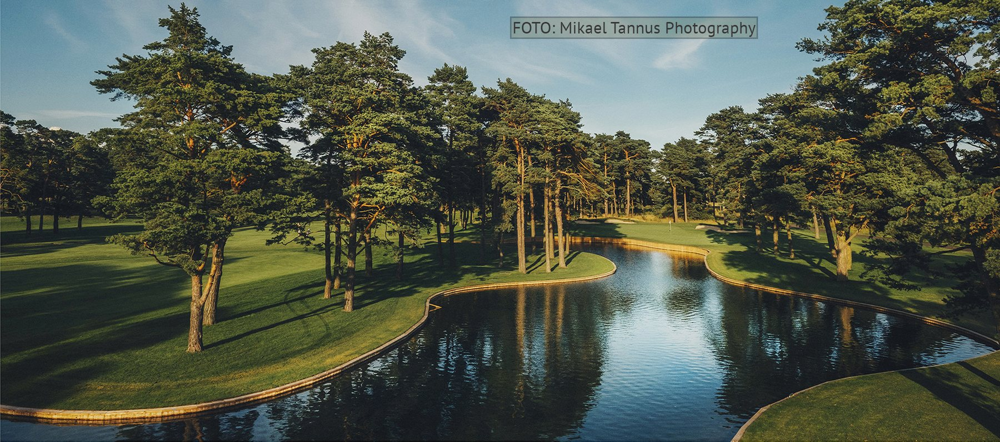
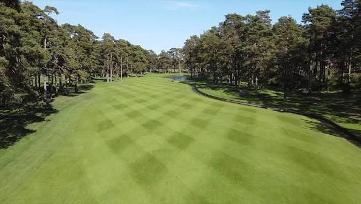
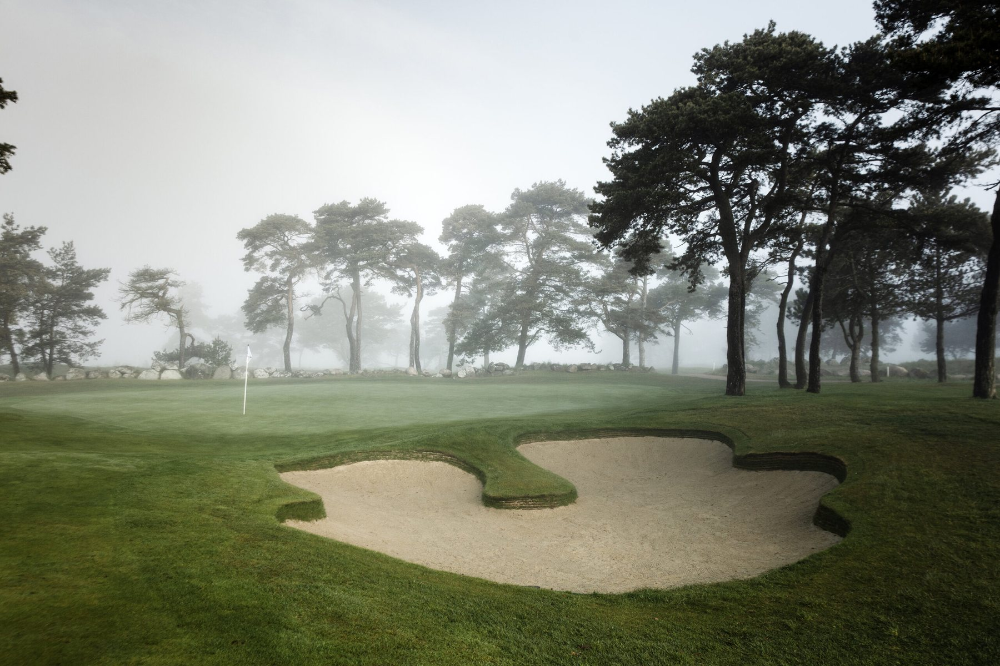
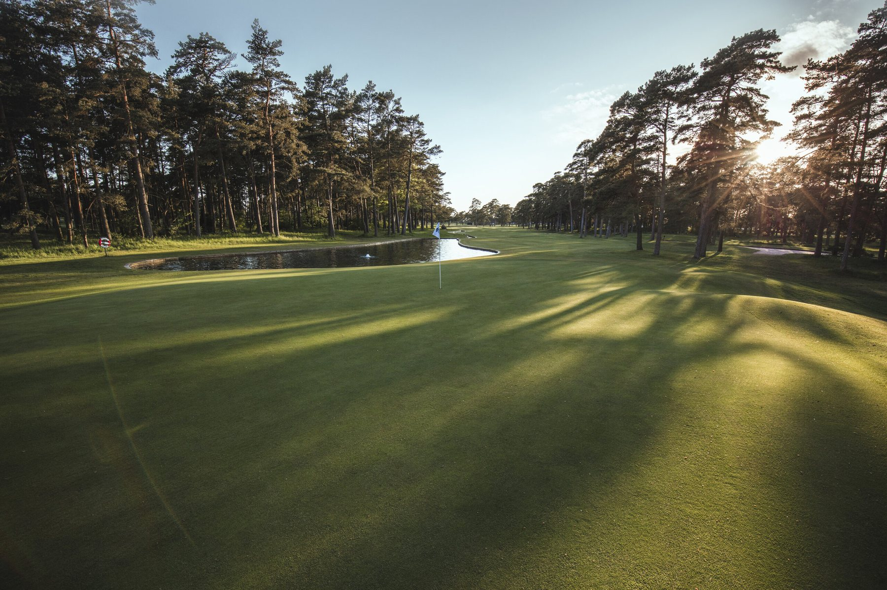
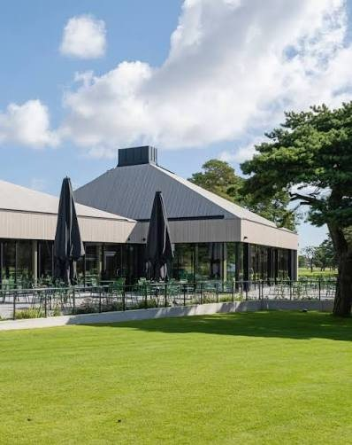
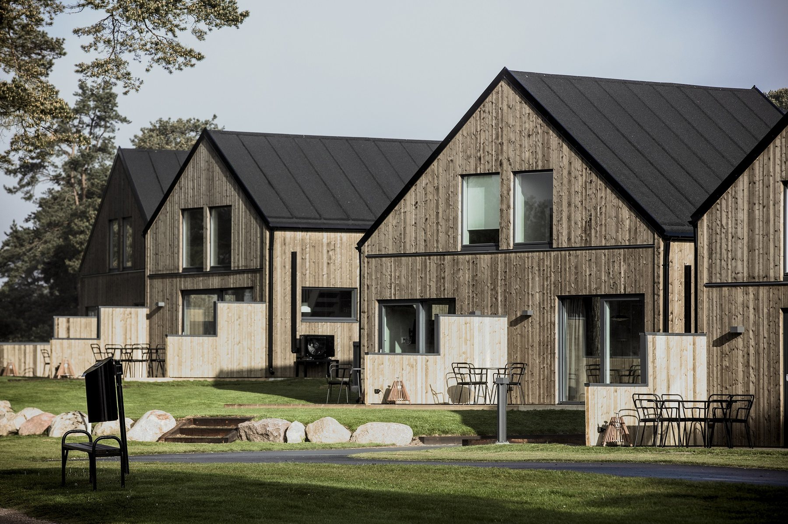

England arrive as holders. Sweden have home ground. Eighteen players, three rounds and one slightly unusual Saturday: Magersfontein returns to Sweden at Kristianstads Golfklubb & Destination.
18 players
18 points available
3 rounds

Kristianstad · Åhus · 2026
The venue
Two courses. Two very different opening questions.
Friday begins on the West Course, a modern inland-links layout whose present form was created by Pierre Fulke and Adam Mednickson and opened in 2021. It is the more forgiving of Kristianstad's two courses — flat, quick to move around and deliberately playable for a broad range of golfers.
Saturday and Sunday move to the East Course. The club's roots reach back to 1924; golf moved to Åhus in the 1930s, and the East developed into the championship course that was substantially rebuilt by Fulke and Mednickson before reopening in 2017. It has been ranked among Sweden's best. In other words, the gentler introduction ends on Friday.
East Course watch. The club's 2026 local rules treat holes 14, 15 and 16 as a connected red penalty-area complex, with a dropping zone on 14. That gives the closing stretch exactly the sort of late-round water trouble that can matter when Saturday and Sunday matches are still alive.
A first look
Pines, water, sand — and somewhere to sleep afterwards.
The 2026 Cup gets a proper visual identity.

Tree-lined golf in Åhus.

Sand and pines frame the approach.

Late light across the course.

The clubhouse.

The on-site lodge: useful after the formal dinner.
The weekend
Three days, with one deliberate complication.
Friday · West Course
4 BetterBalls
First tee 13:05. Alex Scheepers and Janne Nordlander miss Friday, leaving eight players per side.
Saturday · East Course
1 Singles + 4 BetterBalls
First tee 10:00. The one-off Singles match solves the arithmetic created by the nine-player teams.
Sunday · East Course
9 Singles
First tee 10:00. Captains first; the remaining eight matches are drawn on Saturday night.
Friday · 11 September · West Course
Opening BetterBalls
Four matches, ten minutes apart.
13:05
Erling Tysse & Josh Gregory · Eddie Yeandle & Martin Turner
A contrast in familiarity: Tysse/Gregory is a first recorded Magersfontein partnership; Yeandle/Turner have partnered seven times before, taking five wins and two halves — unbeaten together.
Both combinations have one previous Cup outing together. Dahlberg/Lindström halved theirs in Dublin in 2023; Turner/Davey won together in 2025.
13:25
Jonatan Danneman & Pasi Mäkeläinen · Ben Blackburn & Graham Carter
Danneman/Mäkeläinen is a new Cup partnership. Blackburn/Carter have three previous outings together — one win and two defeats — so this is experienced rather than necessarily comfortable.
13:35
Erik Malmsten & Matte Eriksson · Chris Kibbey & Edward Trick
Malmsten/Eriksson have played together twice, unbeaten with a win and a half. Kibbey/Trick make their first recorded Cup start as a pair.
Saturday · 12 September · East Course
The odd Singles, then four BetterBalls
Why a Singles match on Saturday? Magersfontein has nine players per side in 2026. With Alex Scheepers and Janne Nordlander absent on Friday, the opening day works neatly as four BetterBalls. On Saturday all eighteen are present: four BetterBalls use sixteen players, leaving one player from each team. Rather than invent a bye, Edward Trick and Matte Eriksson play an early Singles match worth the same one point as every Sunday Singles. It is the practical solution to an unusual field — and, according to the recorded Cup history, their first head-to-head meeting.
10:00
Matte Eriksson · Edward Trick — Singles
The extra Saturday point. One match, one point, and no partner to blame.
10:10
Jonatan Danneman & Janne Nordlander · Martin Turner & Shaun Davey
Both are first-time recorded Magersfontein partnerships.
Each pair has one previous outing: Dahlberg/Tysse lost in 2025; Turner/Yeandle lost in Dublin in 2023. Somebody improves the partnership record here.
10:30
Markus Lindström & Pasi Mäkeläinen · Alex Scheepers & Graham Carter
Lindström/Mäkeläinen have two previous starts together. Scheepers/Carter are the weekend's established partnership: nine previous Cup matches together, eight wins and one loss, including a reunion victory in 2025.
10:40
Erik Malmsten & Josh Gregory · Ben Blackburn & Chris Kibbey
Malmsten/Gregory halved their first outing together in 2025. Blackburn/Kibbey have five previous starts and four wins — one of the more seasoned combinations in this year's field.
Sunday · 13 September · East Course
Singles day
10:00 · The captains go first
Erik Malmsten v Eddie Yeandle
The captains traditionally play each other in the final Singles match. In 2026 the pairing remains predetermined, but the order is deliberately reversed. Sending them out first should let them finish ahead of the field and double back onto the course to follow, encourage — or interfere with — their teams as the Cup is decided. Their only previous recorded meeting in the same match came as opponents in a 2022 BetterBall, which was halved.
Accommodation is booked for 13 on Thursday night, with dinner included and prepaid at the golf club at 19:30. It is the unofficial opening of the weekend: no points at stake yet, just the first chance to settle in before Magersfontein begins in earnest on Friday.
Friday evening
The wandering night
All 18 players are accommodated on Friday night, but dinner is deliberately left open. Those inclined to investigate Åhus can arrange their own entertainment in town; those favouring a more conservative build-up to Saturday can remain at the golf club. No official dinner, no draw, no obligation.
Saturday evening
Formal dinner & Singles draw
All 18 players are accommodated again on Saturday night. The formal Magersfontein dinner is included in the package, followed by one of the weekend's defining rituals: the Ryder Cup-style Singles draw, with the captains matching the remaining eight players one contest at a time. The captains' own match is already fixed; the rest of Sunday's order becomes official over dinner and, inevitably, a few beers.
Sunday equation. Four Friday BetterBalls, five Saturday matches and nine Sunday Singles produce 18 points. England are the holders; if the overall contest finishes level, the holder retains the Cup.